Linear Analysis of a 4-Bus System
This example can be downloaded as a normal Julia script here.
This example demonstrates eigenvalue analysis and impedance-based Bode analysis of a 4-bus EMT power system.
This example reimplements the basic 4-bus default example from SimplusGT (Simplus Grid Tool). Since we use the same models and parameters, we can directly compare our results to the SimplusGT results.
Please note that this tutorial only replicates a small part of what SimplusGT is capable of, so please check out their great toolbox for in-depth linear analysis of power systems!
Throughout this example we compare our results to figures exported from SimplusGT. You can find a README.md in /docs/examples/SimplusGTData of the PowerDynamics.jl repository which explains how those reference plots have been created.
Synchronous Machine with Stator Dynamics
In order to replicate the results from SimplusGT we need to use identical or nearly identical models. Most of the models needed are present in our Library, but we still need to implement a custom machine model. Since modeling is not the focus of this tutorial, it is provided without further explanation.
Definition of custom Machine Model
using PowerDynamics
using PowerDynamics.Library
using PowerDynamics.Library.ComposableInverter
using ModelingToolkit
using ModelingToolkit: t_nounits as t, D_nounits as Dt
using OrdinaryDiffEqRosenbrock
using OrdinaryDiffEqNonlinearSolve
using NetworkDynamics
using NetworkDynamics: feedback
using CairoMakie
@mtkmodel SyncMachineStatorDynamics begin
@components begin
terminal = Terminal()
end
@parameters begin
J, [description="Inertia constant [MWs²/MVA]"]
D, [description="Damping coefficient [pu]"]
wL, [description="Stator inductance * base frequency [pu]"]
R, [description="Stator resistance [pu]"]
ω0, [description="Base frequency [rad/s]"]
psi_f, [guess=1, description="Field flux linkage [pu]"]
T_m, [guess=1, description="Mechanical torque [pu]"]
end
@variables begin
i_d(t), [guess=0, description="d-axis stator current [pu]"]
i_q(t), [guess=1, description="q-axis stator current [pu]"]
w(t), [guess=2*pi*50, description="Rotor speed deviation [rad/s]"]
theta(t), [guess=0, description="Rotor angle [rad]"]
v_d(t), [guess=1, description="d-axis terminal voltage [pu]"]
v_q(t), [guess=0, description="q-axis terminal voltage [pu]"]
psi_d(t), [guess=1, description="d-axis flux linkage [pu]"]
psi_q(t), [guess=0, description="q-axis flux linkage [pu]"]
Te(t), [guess=1, description="Electrical torque [pu]"]
end
begin
J_pu = J*2/ω0^2
D_pu = D/ω0^2
L = wL/ω0
T_to_loc(α) = [ cos(α) sin(α);
-sin(α) cos(α)]
T_to_glob(α) = T_to_loc(-α)
end
@equations begin
# output transformation (global dq/local dq)
[terminal.i_r, terminal.i_i] .~ -T_to_glob(theta)*[i_d, i_q]
[v_d, v_q] .~ T_to_loc(theta)*[terminal.u_r, terminal.u_i]
# electromechanical equations
psi_d ~ L*i_d
psi_q ~ L*i_q - psi_f
Te ~ psi_f * i_d
Dt(i_d) ~ (v_d - R*i_d + w*psi_q)/L
Dt(i_q) ~ (v_q - R*i_q - w*psi_d)/L
# swing equation
Dt(w) ~ (Te - T_m - D_pu*w)/J_pu
Dt(theta) ~ w - ω0
end
end4-Bus Network Setup
The topology of the network looks like this:
(~)
2╺┯━┷━┯╸
│ │ (GFL)
1╺┯━━━┿╸ │ ╺━┿━╸4
(~) │ │╭────╯
╺┷━┯━┷┷╸3
(GFM)
We have 4 Buses in total, two of which have a synchronous machine connected, one has a grid forming droop inverter and one has a grid following inverter.
The entire modeling in SimplusGT uses EMT Components, meaning that the power lines are modeled using DynamicSeriesRLBranch models. At each of the buses there is a shunt consisting of a parallel capacitor and resistor (DynamicParallelRCShunt).
Since the devices are all natural current sources and we have explicit shunts at all buses (self-edges in SimplusGT data), we use current source modeling according to the docs on voltage and current sources. Specificially, we model each bus as a RC-shunt (the self-edge in SimplusGT), while the devices are connected to those shunt buses as current sources via LoopbackConnection components.
So in the end we get interconnected models of the following form. This is important for the definition of our perturbation ports later on.
╭────────────────┬───────────╮
│ voltage │ u out │
┏━━━━━━━━━━━━━━▽━━┓ ╔═════════△════════╗ │ ╔═══════════════╗
┃ Rest of Network ┃ ║ VertexModel: ║ ╰───▷ Vertex-Model: ║
┃ - voltage in ┃ ║ Shunt-Model ║ ║ Device ║
┃ - current out ┃ ║ - current sum in ║ ║ - voltage in ║
┗━━━━━━━━━━━━━━▽━━┛ ║ - voltage out ║ ╭───◁ - current out ║
│ ╚═════════△════════╝ │ ╚═══════════════╝
current │ i out ╭─┴─╮ │ (direct connection via loopback)
╰──────────────▷ + ◁─────────╯
╰───╯With that we can start defining the actual models. For each model we define:
- a shunt bus (dynamic shunt model, static shunt model for powerflow),
- a device bus (machine or inverter model, Slack, PV or PQ model for powerflow) and
- a loopback connection connecting the current-source device to the shunt bus.
Bus 1 & 2: Synchronous Generators
Bus 1 and 2 are modeled using the previously defined SyncMachineStatorDynamics model. The parameters are taken from the SimplusGT example. During powerflow, the first machine is modeled as a slack bus, the second one as a PV bus. In both cases, we use current source modeling and connect the device to a dynamic shunt bus (which acts like a static shunt during powerflow).
ω0 = 2π*50
sg1_bus, bus1, loop1 = let
@named sm = SyncMachineStatorDynamics(J=3.5, D=1, wL=0.05, R=0.01, ω0=ω0)
@named sg1_bus = compile_bus(MTKBus(sm); current_source=true)
set_pfmodel!(sg1_bus, pfSlack(V=1, δ=0; current_source=true, assume_io_coupling=true))
@named shunt = DynamicParallelRCShunt(R=1/0.6, C=1e-5, ω0=ω0)
@named bus1 = compile_bus(MTKBus(shunt))
set_pfmodel!(bus1, pfShunt(G=0.6, B=1e-5))
loop1 = LoopbackConnection(; potential=[:u_r, :u_i], flow=[:i_r, :i_i], src=:sg1_bus, dst=:bus1)
sg1_bus, bus1, loop1
end
sg2_bus, bus2, loop2 = let
@named sm = SyncMachineStatorDynamics(J=3.5, D=1, wL=0.05, R=0.01, ω0=ω0)
@named sg2_bus = compile_bus(MTKBus(sm); current_source=true)
set_pfmodel!(sg2_bus, pfPV(P=0.5, V=1; current_source=true, assume_io_coupling=true))
@named shunt = DynamicParallelRCShunt(R=1/0.6, C=1e-5, ω0=ω0)
@named bus2 = compile_bus(MTKBus(shunt))
set_pfmodel!(bus2, pfShunt(G=0.6, B=1e-5))
loop2 = LoopbackConnection(; potential=[:u_r, :u_i], flow=[:i_r, :i_i], src=:sg2_bus, dst=:bus2)
sg2_bus, bus2, loop2
endBus 3: Grid-Forming Inverter
The GFM uses a DroopInverter with an LCL filter and cascaded PI controllers for current and voltage. The parameters are converted from SimplusGT bandwidth conventions, where frequency bandwidths are mapped to PI gains, and cross-coupling feedforward is disabled (Fcoupl=0) to match the MATLAB reference.
The GFM acts like a PV bus during powerflow and is once again modeled as a current injector connected to a dynamic shunt bus.
gfm_bus, bus3, loop3 = let
xwLf=0.05; Rf=0.01; xwCf=0.02; xwLc=0.01; Rc=0.002
Xov=0.01; xDw=0.05; xfdroop=5; xfvdq=300; xfidq=600
@named droop = ComposableInverter.DroopInverter(;
filter_type = :LCL,
droop₊Qset = 0,
droop₊Kp = xDw*ω0,
droop₊ω0 = ω0,
droop₊Kq = 0,
droop₊τ_q = Inf,
droop₊τ_p = 1/(xfdroop*2*pi),
vsrc₊CC1_F = 0,
vsrc₊CC1_KI = (xfidq*2*pi)^2*(xwLf/ω0)/4,
vsrc₊CC1_KP = (xfidq*2*pi)*(xwLf/ω0),
vsrc₊CC1_Fcoupl = 0,
vsrc₊VC_KP = (xfvdq*2*pi)*(xwCf/ω0),
vsrc₊VC_KI = (xfvdq*2*pi)^2*(xwCf/ω0)/4*50,
vsrc₊VC_F = 0,
vsrc₊VC_Fcoupl = 0,
vsrc₊X_virt = Xov,
vsrc₊R_virt = 0,
vsrc₊Lg = xwLc,
vsrc₊C = xwCf,
vsrc₊Rf = Rf,
vsrc₊Lf = xwLf,
vsrc₊ω0 = ω0,
vsrc₊Rg = Rc,
)
@named gfm_bus = compile_bus(MTKBus(droop); current_source=true)
set_pfmodel!(gfm_bus, pfPV(P=0.5, V=1; current_source=true, assume_io_coupling=true))
@named shunt = DynamicParallelRCShunt(R=1/0.75, C=1e-5, ω0=ω0)
@named bus3 = compile_bus(MTKBus(shunt))
set_pfmodel!(bus3, pfShunt(G=0.75, B=1e-5))
loop3 = LoopbackConnection(; potential=[:u_r, :u_i], flow=[:i_r, :i_i], src=:gfm_bus, dst=:bus3)
gfm_bus, bus3, loop3
endBus 4: Grid-Following Inverter
The GFL uses a SimpleGFLDC model with DC-link dynamics, L filter, PLL with low-pass filter, and current controller. The parameters are obtained from the SimplusGT model. During powerflow, the GFL acts like a PQ bus.
gfl_bus, bus4, loop4 = let
V_dc=2.5; C_dc=1.25; f_v_dc=5
xwLf=0.03; Rf=0.01
f_pll=5; f_tau_pll=300; f_i_dq=600
@named gfl = ComposableInverter.SimpleGFLDC(;
ω0 = ω0,
Lf = xwLf,
Rf = Rf,
PLL_Kp = f_pll*2*pi,
PLL_Ki = (f_pll*2*pi)^2/4,
PLL_τ_lpf = 1/(f_tau_pll*2*pi),
CC1_KP = (xwLf/ω0) * (f_i_dq*2*pi),
CC1_KI = (xwLf/ω0) * (f_i_dq*2*pi)^2 / 4,
CC1_F = 0,
CC1_Fcoupl = 0,
C_dc = C_dc,
V_dc = V_dc,
kp_v_dc = V_dc*C_dc*(f_v_dc*2*pi),
ki_v_dc = V_dc*C_dc*(f_v_dc*2*pi) * (f_v_dc*2*pi)/4,
)
@named gfl_bus = compile_bus(MTKBus(gfl); current_source=true)
set_pfmodel!(gfl_bus, pfPQ(P=0.5, Q=-0.2; current_source=true))
@named shunt = DynamicParallelRCShunt(R=1/0.05, C=1e-5, ω0=ω0)
@named bus4 = compile_bus(MTKBus(shunt))
set_pfmodel!(bus4, pfShunt(G=0.05, B=1e-5))
loop4 = LoopbackConnection(; potential=[:u_r, :u_i], flow=[:i_r, :i_i], src=:gfl_bus, dst=:bus4)
gfl_bus, bus4, loop4
endTransmission Lines
All lines use DynamicSeriesRLBranch (dynamic RL in the rotating dq-frame). Line 3→4 includes a turns ratio of 0.99 in accordance with the SimplusGT model. Static PiLine models are attached for the power flow solver.
line12 = let
@named branch = DynamicSeriesRLBranch(R=0.01, L=0.3, ω0=ω0)
lm = compile_line(MTKLine(branch); name=:l12, src=:bus1, dst=:bus2)
@named branch_pf = PiLine(R=0.01, X=0.3)
pfmod = compile_line(MTKLine(branch_pf); name=:l12_pfmod)
set_pfmodel!(lm, pfmod)
lm
end
line23 = let
@named branch = DynamicSeriesRLBranch(R=0.01, L=0.3, ω0=ω0)
lm = compile_line(MTKLine(branch); name=:l23, src=:bus2, dst=:bus3)
@named branch_pf = PiLine(R=0.01, X=0.3)
pfmod = compile_line(MTKLine(branch_pf); name=:l23_pfmod)
set_pfmodel!(lm, pfmod)
lm
end
line31 = let
@named branch = DynamicSeriesRLBranch(R=0.01, L=0.3, ω0=ω0)
lm = compile_line(MTKLine(branch); name=:l31, src=:bus3, dst=:bus1)
@named branch_pf = PiLine(R=0.01, X=0.3)
pfmod = compile_line(MTKLine(branch_pf); name=:l31_pfmod)
set_pfmodel!(lm, pfmod)
lm
end
line34 = let
@named branch = DynamicSeriesRLBranch(R=0.01, L=0.3, ω0=ω0, r_dst=0.99)
lm = compile_line(MTKLine(branch); name=:l34, src=:bus3, dst=:bus4)
@named branch_pf = PiLine(R=0.01, X=0.3, r_dst=0.99)
pfmod = compile_line(MTKLine(branch_pf); name=:l34_pfmod)
set_pfmodel!(lm, pfmod)
lm
endNetwork Assembly and Initialization
We assemble the network from 8 vertex models (4 device buses + 4 network buses), 4 loopback connections, and 4 transmission lines.
After defining the network we solve the powerflow and initialize the dynamic states at the powerflow solution. This is the operating point around which we will analyze the system.
nw = Network([sg1_bus, bus1, sg2_bus, bus2, gfm_bus, bus3, gfl_bus, bus4],
[loop1, loop2, loop3, loop4, line12, line23, line31, line34]; warn_order=false)
pfs = solve_powerflow(nw; abstol=1e-10, reltol=1e-10)
s0 = initialize_from_pf!(nw; pfs, tol=1e-7, nwtol=1e-7)Initialize VIndex(1) -> 6.114655223365241e-15
Initialize VIndex(2) -> 4.2315738567606557e-10
Initialize VIndex(3) -> 2.2640520640733482e-14
Initialize VIndex(4) -> 5.120412652869021e-10
Initialize VIndex(5) -> 8.944416269384488e-13
Initialize VIndex(6) -> 1.17030094251339e-8
Initialize VIndex(7) -> 1.649300367088534e-12
Initialize VIndex(8) -> 1.41779809440649e-8
Initialize EIndex(1) -> 0.0
Initialize EIndex(2) -> 1.5757357078607168e-16
Initialize EIndex(3) -> 0.0
Initialize EIndex(4) -> 6.240178189820104e-15
Initialize EIndex(5) -> 0.0
Initialize EIndex(6) -> 7.198844511193468e-15
Initialize EIndex(7) -> 4.019578521369299e-14
Initialize EIndex(8) -> 0.0
Initialized network with residual 4.6211848419994314e-8!Eigenvalue Analysis
The ND.jl function jacobian_eigenvals linearizes the system around an operation point, eliminates algebraic constraints via Schur complement, and returns the eigenvalues of the reduced state matrix. We divide by $2\pi$ to convert from rad/s to Hz. We plot the eigenvalues in the complex plane to get the global pole map of the system.
eigenvalues = jacobian_eigenvals(s0) ./ (2 * pi)46-element Vector{ComplexF64}:
-3.7426524047789173e6 - 49.99999999865849im
-3.7426524047789173e6 + 49.99999999865849im
-2.998054079741754e6 - 49.99999999999252im
-2.998054079741754e6 + 49.99999999999252im
-2.99749790715357e6 - 49.99999999977018im
-2.99749790715357e6 + 49.99999999977018im
-205304.73448214168 - 50.000168710271545im
-205304.73448214168 + 50.000168710271545im
-45279.473555920966 - 49.998577808140304im
-45279.473555920966 + 49.998577808140304im
⋮
-1.6666666666670493 + 49.999999999999815im
-1.6535848233396733 - 1.2629827797815658im
-1.6535848233396733 + 1.2629827797815658im
-1.5076610387017564 + 0.0im
-0.25592529337267667 + 0.0im
-0.007794285519987495 - 2.7486657692270686im
-0.007794285519987495 + 2.7486657692270686im
-0.0 + 0.0im
4.328144717208554e-9 + 0.0imPlotting code: Pole Map
fig = let
fig = Figure(size=(600,400))
ax1 = Axis(fig[1, 1], xlabel="Real Part [Hz]", ylabel="Imaginary Part [Hz]", title="Global Pole Map")
scatter!(ax1, real.(eigenvalues), imag.(eigenvalues), marker=:xcross)
ax2 = Axis(fig[1, 2], xlabel="Real Part [Hz]", ylabel="Imaginary Part [Hz]", title="Zoomed In")
scatter!(ax2, real.(eigenvalues), imag.(eigenvalues), marker=:xcross)
xlims!(ax2, -80, 20); ylims!(ax2, -150, 150)
fig
end;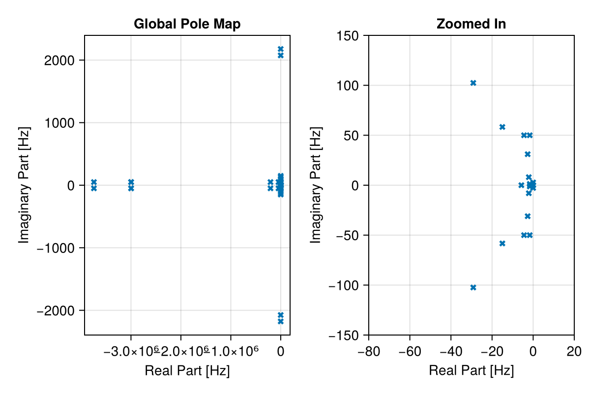
The results match what we get from SimplusGT for that system.
Reference: Pole Map (click to reveal)
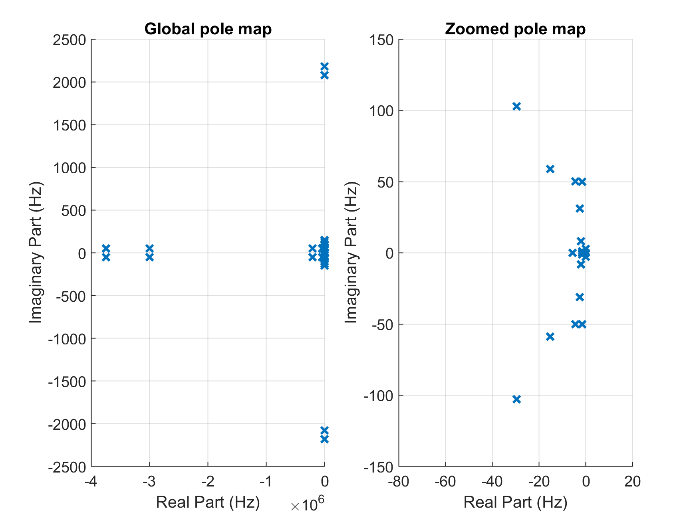
Impedance-Based Bode Analysis
SimplusGT models each device as a transfer function from bus voltage to injected current: the device admittance $G(s)$. To get a closed loop model, they add feedback through the network impedance matrix $Z(s)$. For impedance-based stability analysis, they directionally perturb the voltage input of a device without perturbing that voltage point in the network – effectively opening the loop at that bus.
(Admittance-like)
╭────────────────╮
δu_dq╶─→●──→┤ Device TF G(s) ├→───●──╴ i_dq
│ ╰────────────────╯ │
│ │
│ ╭────────────────╮ │
(bus ╰──←┤ Grid TF Z(s) ├←───╯
voltage) ╰────────────────╯
(Impedance-like)This kind of analysis can be replicated using the linearize_network function while providing the in and out keyword arguments. With in it is possible to specify the perturbation port, out defines the observed state under this perturbation.
Perturbation in the linearization sense is directed; our device models however are fully acausal, there is no directionality within their definition. Therefore we are a bit restricted in the choice of perturbation channel: it has to be a "connection" between network components, i.e. either a vertex input, a vertex output, an edge input or an edge output.
Considering the component interconnection on the network level sketched out above, we have 6 channels for directional perturbation injection, 4 of which are unique:
╭────────────────┬───────────╮
δu_in →∙ δu_out →∙ ∙← δu_in
(line) │ (hub) │ │ (device)
┏━━━━━━━━━━━━━━▽━━┓ ╔═════════△════════╗ │ ╔═══════════════╗
┃ Rest of Network ┃ ║ Shunt-Model ║ ╰───▷ Device-Model ║
┃ - voltage in ┃ ║ - current sum in ║ ║ - voltage in ║
┃ - current out ┃ ║ - voltage out ║ ╭───◁ - current out ║
┗━━━━━━━━━━━━━━▽━━┛ ╚═════════△════════╝ │ ╚═══════════════╝
δi_out →∙ δi_out →∙ ∙← δi_out
(line) │ (hub) ╭─┴─╮ │ (device)
╰──────────────▷ + ◁─────────╯
╰───╯δu_in (line): Perturbation of the voltage at the line side (perturbs line)δu_out (hub): Perturbation of the voltage at the hub output (influences both device and line)δu_in (device): Perturbation of the voltage at the device input (perturbs device)δi_out (line),δi_out (hub)andδi_out (device): Perturbation of the current before or after aggregation. Mathematically equivalent, as all affect only the hub input either way.
The linearization of the full, nonlinear system $\mathrm{M} \dot{x} = f(x)$ is done via automatic differentiation around the operating point $x_0$ with respect to the input and output channels $u$ and $y$ as defined by the in and out arguments. This results in a linear descriptor system of the form
\[\begin{aligned} \mathrm{M} \dot{x} &= \frac{\partial f}{\partial x}\bigg|_{x_0}\delta x + \frac{\partial f}{\partial u}\bigg|_{x_0}\delta u &= \mathrm{A} \delta x + \mathrm{B}\delta u\\ \delta y &= \frac{\partial g}{\partial x}\bigg|_{x_0}\delta x + \frac{\partial g}{\partial u}\bigg|_{x_0}\delta u &= \mathrm{C} \delta x + \mathrm{D}\delta u \end{aligned}\]
$d$-Component Bus Admittance $Y_{dd}$
First, we are interested in the $Y_{dd}(s)$ admittance, which is the transfer function from δu_in (device) to the device output. I.e. we perturb the input voltage for the device model and observe the change in current output. This is directly equivalent to the ports used in SimplusGT shown above.
To match the conventional naming in literature and SimplusGT we use $dq$ a lot throughout this tutorial. Note however, that the actual channels are called u_r, u_i, i_r and i_i. This is because per convention PowerDynamics uses $ri$ (real/imaginary) naming for the global and fixed frequency dq-frame to distinguish it from the local dq frames commonly used in machine and inverter models.
Since we are only interested in $Y_{dd}$ for now, we get away with a SISO system. We just specify a single perturbation and a single observed channel:
sys = linearize_network(
s0;
in=VIndex(:sg1_bus, :busbar₊u_r), # <- dertermines where the perturbation enters
out=VIndex(:sg1_bus, :busbar₊i_r), # <- determines which output we observe
)NetworkDescriptorSystem with
├─ 46 states
├─ 1 input: VIndex(:sg1_bus, :busbar₊u_r)
└─ 1 output: VIndex(:sg1_bus, :busbar₊i_r)The return value is a NetworkDescriptorSystem, which is a relatively simple wrapper around the matrices of a linearized system. In addition to accessing the matrices via sys.A, sys.B, sys.C and sys.D, the system also acts like a transfer function which can be evaluated at a complex frequency:
sys(im * 2π*50)19.448992762891475 - 2.0653402892272394imNetworkDynamics/PowerDynamics itself does not provide lots of functionality around LTIs. However you may just access the system matrices sys.A and so on to construct systems from specialized libraries such as ControlSystems.jl or DescriptorSystems.jl, or you can directly work with the matrices for your own custom analysis. Since we just want to generate a bode plot, we avoid additional dependencies in this example and sample and plot the transferfunction manually.
First, we need to obtain the admittance transfer functions for all 4 devices, then we can generate the bode plot.
Gs = map([:sg1_bus, :sg2_bus, :gfm_bus, :gfl_bus]) do COMP
vs = VIndex(COMP, :busbar₊u_r)
cs = VIndex(COMP, :busbar₊i_r)
G = NetworkDynamics.linearize_network(s0; in=vs, out=cs)
endPlotting code: Y_dd Bode Plot
fig = with_theme(Theme(palette = (; color = Makie.wong_colors()[[1, 6, 2, 4]]))) do
# we use the theme to get closer to matlab colors
fig = Figure(; size=(800, 600))
Label(fig[1, 1], "Y_{dd} Bode Plot", halign=:center, tellwidth=false)
ax1 = Axis(fig[2, 1], xlabel="Frequency (rad/s)", ylabel="Gain (dB)", xscale=log10)
ax2 = Axis(fig[3, 1], xlabel="Frequency (rad/s)", ylabel="Phase (deg)", xscale=log10)
labels=["Bus $i" for i in 1:length(Gs)]
for (G, label) in zip(Gs, labels)
fs = 10 .^ (range(log10(1e-1), log10(1e4); length=1000))
jωs = 2π * fs * im
gains = map(s -> 20 * log10(abs(G(s))), jωs)
phases = rad2deg.(unwrap_rad(map(s -> angle(G(s)), jωs)))
lines!(ax1, fs, gains; label, linewidth=2)
lines!(ax2, fs, phases; label, linewidth=2)
end
axislegend(ax1)
fig
end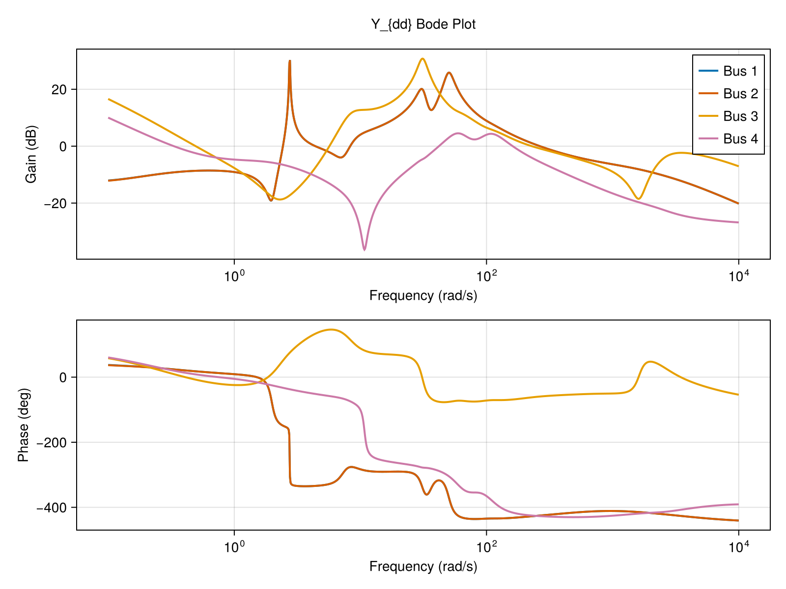
There is a small difference in the unwrapping algorithm, but besides that we nicely replicate the results from SimplusGT.
Reference: Y_dd Bode Plot (click to reveal)
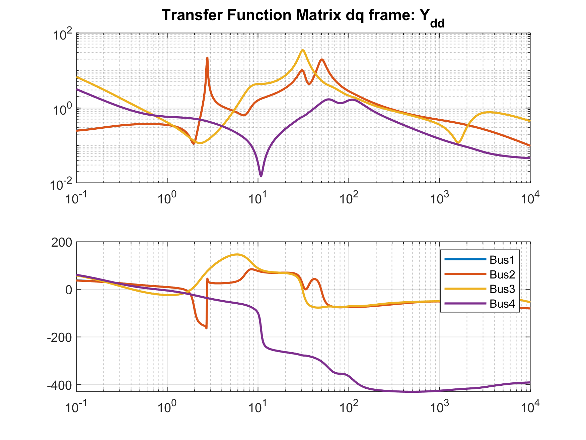
Complex Bus Admittance $Y_{dq+}$
The $Y_{dd}$ plot above shows only the d-axis to d-axis coupling. To analyze sequence-dependent behavior, we transform the full 2×2 dq admittance matrix into complex vector form.
In the dq-frame, the admittance is a 2×2 real-valued transfer function matrix:
\[\mathbf{Y}_{dq}(s) = \begin{bmatrix} Y_{dd}(s) & Y_{dq}(s) \\ Y_{qd}(s) & Y_{qq}(s) \end{bmatrix}\]
We apply the complex vector transformation:
\[\mathbf{Y}_{\text{complex}}(s) = \mathbf{T} \cdot \mathbf{Y}_{dq}(s) \cdot \mathbf{T}^{-1}\]
where
\[\mathbf{T} = \begin{bmatrix} 1 & \phantom{-}j \\ 1 & -j \end{bmatrix}, \quad \mathbf{T}^{-1} = \frac{1}{2}\begin{bmatrix} \phantom{-}1 & 1 \\ -j & j \end{bmatrix}\]
The resulting matrix separates positive and negative sequence components:
\[\mathbf{Y}_{\text{complex}}(s) = \begin{bmatrix} Y_{dq+}(s) & Y_{+-}(s) \\ Y_{-+}(s) & Y_{dq-}(s) \end{bmatrix}\]
where:
- $Y_{dq+}(s)$ is the positive sequence (forward-rotating) admittance
- $Y_{dq-}(s)$ is the negative sequence (backward-rotating) admittance
- Off-diagonal terms represent sequence coupling
For a perfectly balanced, symmetric system, $Y_{dq+}(j\omega) = Y_{dq+}(-j\omega)$. However, systems with PLLs, rotating reference frames, or sequence-dependent control exhibit asymmetry: $Y_{dq+}(j\omega) \neq Y_{dq+}(-j\omega)$. This is why we plot over both positive and negative frequencies.
First, we map over all devices again, get the full $u_{dq} \mapsto i_{dq}$ transfer function and then calculate $Y_{dq+}$ from it. This time we need to include both r and i components in the perturbation channel in and the observed channel out.
Gs_dqplus = map([:sg1_bus, :sg2_bus, :gfm_bus, :gfl_bus]) do COMP
vs = [VIndex(COMP, :busbar₊u_r), VIndex(COMP, :busbar₊u_i)]
cs = [VIndex(COMP, :busbar₊i_r), VIndex(COMP, :busbar₊i_i)]
G = NetworkDynamics.linearize_network(s0; in=vs, out=cs)
# Complex vector transformation
T = [1.0 1.0im; 1.0 -1.0im]
Tinv = inv(T)
# Return positive sequence admittance Y_dq+(s)
(s) -> (T * G(s) * Tinv)[1,1]
endIn the last line we only took the $Y_{dq+}$ from the resulting $2 \times 2$ matrix, since $Y_{dq+}(j\,\omega) = Y_{dq-}(-j\,\omega)$ and we can obtain both positive and negative sequence plots from the same matrix element.
Plotting code: Y_dq+ Bode Plot
fig = with_theme(Theme(palette = (; color = Makie.wong_colors()[[1, 6, 2, 4]]))) do
fig = Figure(; size=(900, 600))
Label(fig[0, 1:2], "Y_{dq+} Bode Plot", fontsize=16, halign=:center, tellwidth=false)
# Create 2×2 grid: [magnitude_neg, magnitude_pos; phase_neg, phase_pos]
ax_mag_neg = Axis(fig[1, 1], xlabel="Frequency (Hz)", ylabel="Gain (dB)",
xscale=log10, xreversed=true)
ax_mag_pos = Axis(fig[1, 2], xlabel="Frequency (Hz)",
xscale=log10, yticklabelsvisible=false, yticksvisible=false)
ax_phase_neg = Axis(fig[2, 1], xlabel="Frequency (Hz)", ylabel="Phase (deg)",
xscale=log10, xreversed=true)
ax_phase_pos = Axis(fig[2, 2], xlabel="Frequency (Hz)",
xscale=log10, yticklabelsvisible=false, yticksvisible=false)
labels = ["Bus $i" for i in 1:length(Gs_dqplus)]
for (G, label) in zip(Gs_dqplus, labels)
fs_pos = 10 .^ (range(log10(1e-1), log10(1e4); length=500))
fs_neg = fs_pos
jωs_pos = 2π * fs_pos * im
jωs_neg = -2π * fs_neg * im
gains_pos = map(s -> 20 * log10(abs(G(s))), jωs_pos)
gains_neg = map(s -> 20 * log10(abs(G(s))), jωs_neg)
phases_pos = rad2deg.(unwrap_rad(map(s -> angle(G(s)), jωs_pos)))
phases_neg = rad2deg.(unwrap_rad(map(s -> angle(G(s)), jωs_neg)))
# Plot negative frequencies (reversed x-axis)
lines!(ax_mag_neg, fs_neg, gains_neg; label, linewidth=2)
lines!(ax_phase_neg, fs_neg, phases_neg; label, linewidth=2)
# Plot positive frequencies
lines!(ax_mag_pos, fs_pos, gains_pos; label, linewidth=2)
lines!(ax_phase_pos, fs_pos, phases_pos; label, linewidth=2)
end
axislegend(ax_mag_pos; position=:rb)
linkyaxes!(ax_mag_neg, ax_mag_pos)
linkyaxes!(ax_phase_neg, ax_phase_pos)
fig
end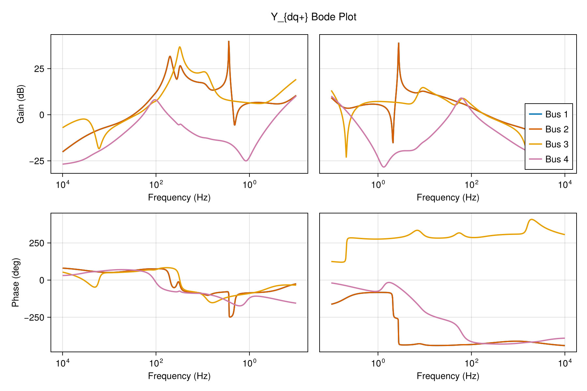
Once again we match the results obtained from SimplusGT for the same analysis.
Reference: Y_dq+ Bode Plot (click to reveal)
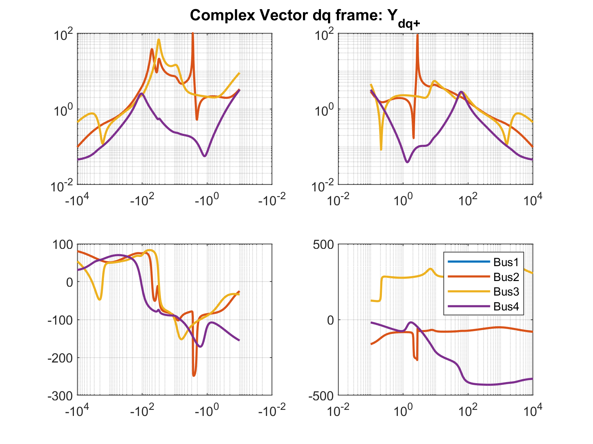
Open-Loop Decomposition (Alternative Approach)
The analyses above linearize the closed-loop nonlinear system directly. An alternative — and sometimes more insightful — approach is to first decompose the network into open-loop subsystems, get a linear representation of those and then reconnect them using LTI feedback algebra.
The function open_loop_linearization splits the linearized system into three transfer-function blocks in double-feedback loop:
╔══════════════════════╗
╭──→╢ "normal" Nodes Zbus ╟→──╮
stacked │ ╚══════════════════════╝ │ stacked
aggregated node │ ╭──────────────────────╮ │ node
flow input¹ (+)─←┤ Network Coupling Ynw ├←──┤ potentials¹
│ ╰──────────────────────╯ │
│ ╭──────────────────────╮ │
╰──←┤ Injector Nodes Yinj ├←──╯
╰──────────────────────╯
¹ Only considering "normal" i.e. non-injector nodesZbus: the bus impedance (shunt vertices). Maps summed current injections → bus voltages.Ynw: the network admittance (all transmission lines). Maps bus voltages → current injections.Yinj: the injector admittance (device models connected viaLoopbackConnection). Maps bus voltages → current injections.
The closed-loop system is recovered by placing Zbus in the forward path and the sum Ynw + Yinj in the feedback path:
(; Ynw, Zbus, Yinj) = open_loop_linearization(s0)Each of these is a NetworkDescriptorSystem and can be composed using the standard LTI operations +, *, and feedback.
To reconstruct the full closed-loop system:
full_closed_loop = feedback(Zbus, Ynw + Yinj; pos=true)NetworkDescriptorSystem with
├─ 46 states
├─ 8 inputs: [VIndex(2, :busbar₊i_r), VIndex(2, :busbar₊i_i), VIndex(4, :busbar₊i_r), VIndex(4, :busbar₊i_i), VIndex(6, :busbar₊i_r), VIndex(6, :busbar₊i_i), VIndex(8, :busbar₊i_r), VIndex(8, :busbar₊i_i)]
└─ 8 outputs: [VIndex(2, :busbar₊u_r), VIndex(2, :busbar₊u_i), VIndex(4, :busbar₊u_r), VIndex(4, :busbar₊u_i), VIndex(6, :busbar₊u_r), VIndex(6, :busbar₊u_i), VIndex(8, :busbar₊u_r), VIndex(8, :busbar₊u_i)]We use pos=true here because the block diagram shows positive feedback: the flows from Ynw and Yinj are added to the external input at the summing junction.
The object full_closed_loop is again a NetworkDescriptorSystem. It is similar to the linearization we obtained earlier via linearize_network, just assembled differently. The only difference are the selected input/output channels.
The feedback operator keeps the inputs/outputs from the forward pass. We can close the loop differently in order to reconstruct a full closed loop network with suitable inputs/outputs for the $Y_{dd}$ admittance again (i.e. device voltage perturbation to device current perturbation).
╭──────────────────────────────────╮
δu_dq ╶───(+)→┤ Injector Nodes Yinj ├→─┬────╴δi_dq
│ ╰──────────────────────────────────╯ │
│ │
│ ╔══════════════════════════════════╗ │
│ ║ NW + Shunt Impedance ║ │
│ ║ ╔══════════════════════╗ ║ │
╰────┬─←╢ "normal" Nodes Zbus ╟←─(+)────╯
║ │ ╚══════════════════════╝ │ ║
║ │ ╭──────────────────────╮ │ ║
║ ╰─→┤ Network Coupling Ynw ├→──╯ ║
║ ╰──────────────────────╯ ║
╚══════════════════════════════════╝Which is equivalent to what happens in SimplusGT internally.
nw_with_shunts = feedback(Zbus, Ynw; pos=true) # close Zbus with network only
inj_closed_loop = feedback(Yinj, nw_with_shunts; pos=true) # close device with network+shuntsNetworkDescriptorSystem with
├─ 46 states
├─ 8 inputs: [VIndex(2, :busbar₊u_r), VIndex(2, :busbar₊u_i), VIndex(4, :busbar₊u_r), VIndex(4, :busbar₊u_i), VIndex(6, :busbar₊u_r), VIndex(6, :busbar₊u_i), VIndex(8, :busbar₊u_r), VIndex(8, :busbar₊u_i)]
└─ 8 outputs: [VIndex(2, :busbar₊i_r), VIndex(2, :busbar₊i_i), VIndex(4, :busbar₊i_r), VIndex(4, :busbar₊i_i), VIndex(6, :busbar₊i_r), VIndex(6, :busbar₊i_i), VIndex(8, :busbar₊i_r), VIndex(8, :busbar₊i_i)]Sanity Check: Eigenvalue Comparison
Let's verify that the closed-loop eigenvalues from the open-loop composition match the eigenvalues we computed earlier from the full nonlinear system.
Sanity Check: Eigenvalue comparison (click to expand)
eigenvalues_ol = jacobian_eigenvals(full_closed_loop) ./ (2 * pi)
fig = let
fig = Figure(size=(600,400))
ax = Axis(fig[1, 1], xlabel="Real Part [Hz]", ylabel="Imaginary Part [Hz]",
title="Eigenvalue Comparison: Direct vs Open-Loop Composition")
scatter!(ax, real.(eigenvalues), imag.(eigenvalues), marker=:xcross, markersize=14,
label="Direct (linearize_network)")
scatter!(ax, real.(eigenvalues_ol), imag.(eigenvalues_ol), marker=:circle, markersize=8,
label="Open-loop composition")
xlims!(ax, -80, 20); ylims!(ax, -150, 150)
axislegend(ax; position=:lt)
fig
end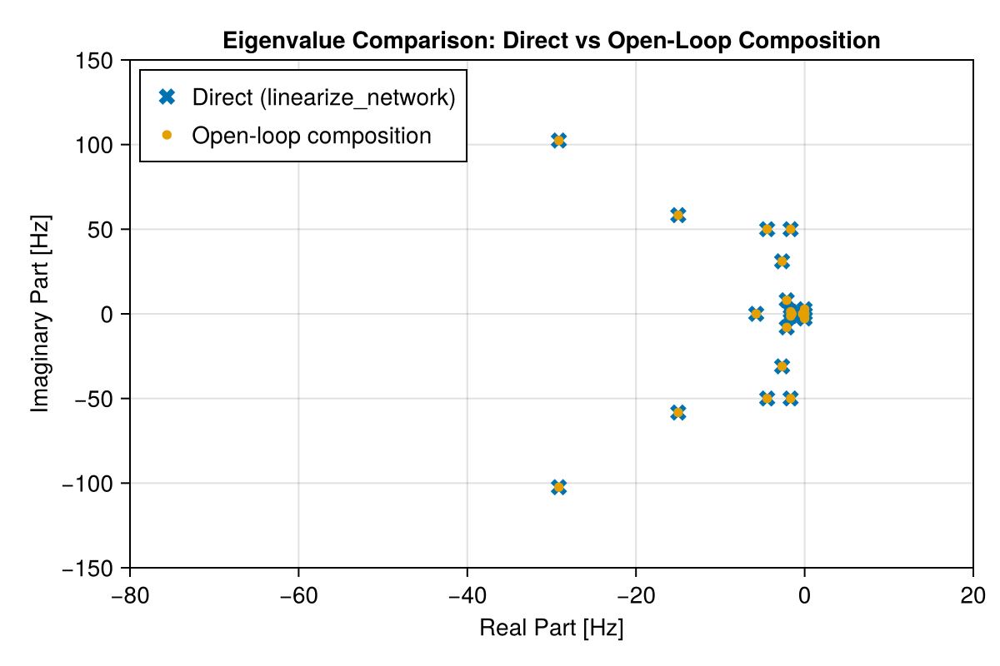
The eigenvalues match exactly, confirming that linearizing first and then composing via feedback gives the same result as linearizing the full closed-loop nonlinear system.
Sanity Check: $Y_{dd}$ Bode Plot Comparison
Similarly, we can verify the $Y_{dd}$ admittance Bode plot. The inj_closed_loop system maps bus voltages to device current injections (a MIMO system with stacked dq channels for all 4 buses). We extract the u_r → i_r channel for Bus 1 and compare it to the direct $Y_{dd}$ computed earlier.
Sanity Check: Y_dd Bode comparison (click to expand)
fig = let
# The inj_closed_loop channels use bus node indices (even numbers: 2,4,6,8).
# Bus 1's bus node is vertex 2 in the network.
icl_in_r = findfirst(==(VIndex(2, :busbar₊u_r)), inj_closed_loop.insym)
icl_out_r = findfirst(==(VIndex(2, :busbar₊i_r)), inj_closed_loop.outsym)
fs = 10 .^ (range(log10(1e-1), log10(1e4); length=500))
jωs = 2π * fs * im
# Direct Y_dd from earlier
gains_direct = map(s -> 20 * log10(abs(Gs[1](s))), jωs)
# Open-loop composition: select the Bus 1 u_r → i_r element from inj_closed_loop
gains_ol = map(s -> 20 * log10(abs(inj_closed_loop(s)[icl_out_r, icl_in_r])), jωs)
fig = Figure(size=(600,300))
ax = Axis(fig[1, 1], xlabel="Frequency (rad/s)", ylabel="Gain (dB)",
title="Y_dd Bus 1: Direct vs Open-Loop", xscale=log10)
lines!(ax, fs, gains_direct; label="Direct", linewidth=3)
lines!(ax, fs, gains_ol; label="Open-loop composition", linewidth=2, linestyle=:dash)
axislegend(ax; position=:rt)
fig
end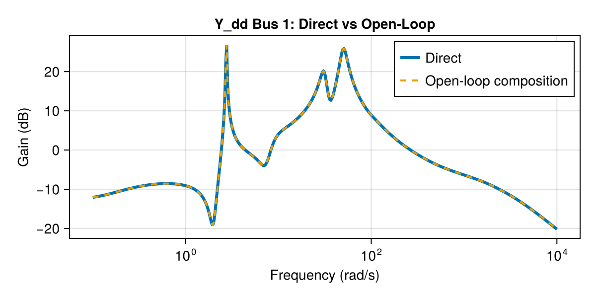
The Bode plots are identical, confirming the equivalence of both approaches.
Time-Domain Simulation
Since we have the full nonlinear model at hand, let's also do a time-domain simulation. To perturb the system, we apply a three-phase short circuit at Bus 1 by reducing the shunt resistance to near zero for a short time. The fault starts at 0.1s and is cleared at 0.2s.
affect = ComponentAffect([], [:shunt₊R]) do u, p, ctx
if ctx.t == 0.1
println("Short Circuit at Bus 1 at t=0.1s")
p[:shunt₊R] = 1e-6
elseif ctx.t == 0.2
println("Clearing Short Circuit at Bus 1 at t=0.2s")
p[:shunt₊R] = 1/0.6
end
end
short = PresetTimeComponentCallback([0.1, 0.2], affect)
prob = ODEProblem(nw, s0, (0,30); add_comp_cb=VIndex(:bus1)=>short)
sol = solve(prob, Rodas5P())Short Circuit at Bus 1 at t=0.1s
Clearing Short Circuit at Bus 1 at t=0.2sLet's compare the results against a similar EMT simulation done in the Simulink model generated by SimplusGT.
Plotting code: Short Circuit Response
fig = with_theme(Theme(palette = (; color = Makie.wong_colors()[[1, 6, 2, 4]]))) do
fig = Figure(size=(600,700))
ts = refine_timeseries(sol.t)
xlabel = "Time [s]"
ylabel = "Voltage Magnitude [p.u.]"
ax1 = Axis(fig[1,1]; title="Voltage Magnitude (full sim time)", limits=((0,30), (0.0, 1.2)), ylabel)
lines!(ax1, ts, sol(ts, idxs=VIndex(:bus1, :busbar₊u_mag)).u; label="Bus 1")
lines!(ax1, ts, sol(ts, idxs=VIndex(:bus2, :busbar₊u_mag)).u; label="Bus 2")
lines!(ax1, ts, sol(ts, idxs=VIndex(:bus3, :busbar₊u_mag)).u; label="Bus 3")
lines!(ax1, ts, sol(ts, idxs=VIndex(:bus4, :busbar₊u_mag)).u; label="Bus 4")
ax2 = Axis(fig[2,1]; title="Short Circuit", limits=((0,0.5), (0.0, 1.2)), ylabel)
lines!(ax2, ts, sol(ts, idxs=VIndex(:bus1, :busbar₊u_mag)).u; label="Bus 1")
lines!(ax2, ts, sol(ts, idxs=VIndex(:bus2, :busbar₊u_mag)).u; label="Bus 2")
lines!(ax2, ts, sol(ts, idxs=VIndex(:bus3, :busbar₊u_mag)).u; label="Bus 3")
lines!(ax2, ts, sol(ts, idxs=VIndex(:bus4, :busbar₊u_mag)).u; label="Bus 4")
ax3 = Axis(fig[3,1]; title="EMT Transients after fault clearing", limits=((0.199,0.204), (0.55, 1.65)), xlabel,ylabel)
lines!(ax3, ts, sol(ts, idxs=VIndex(:bus1, :busbar₊u_mag)).u; label="Bus 1")
lines!(ax3, ts, sol(ts, idxs=VIndex(:bus2, :busbar₊u_mag)).u; label="Bus 2")
lines!(ax3, ts, sol(ts, idxs=VIndex(:bus3, :busbar₊u_mag)).u; label="Bus 3")
lines!(ax3, ts, sol(ts, idxs=VIndex(:bus4, :busbar₊u_mag)).u; label="Bus 4")
axislegend(ax1; position=:rb)
fig
end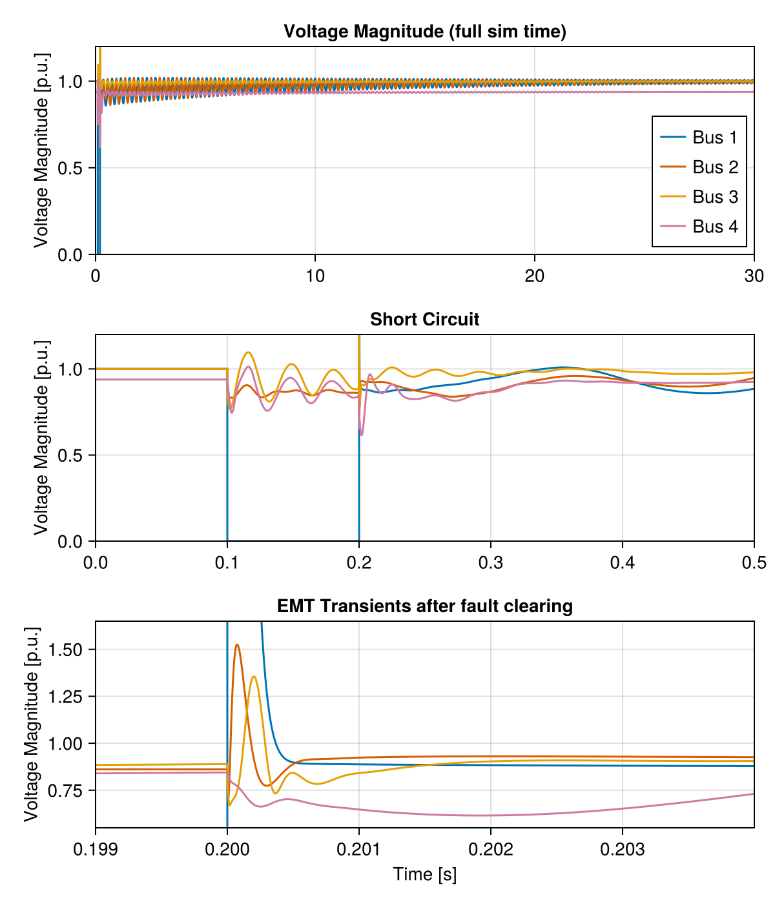
Reference: Short Circuit Response (click to reveal)
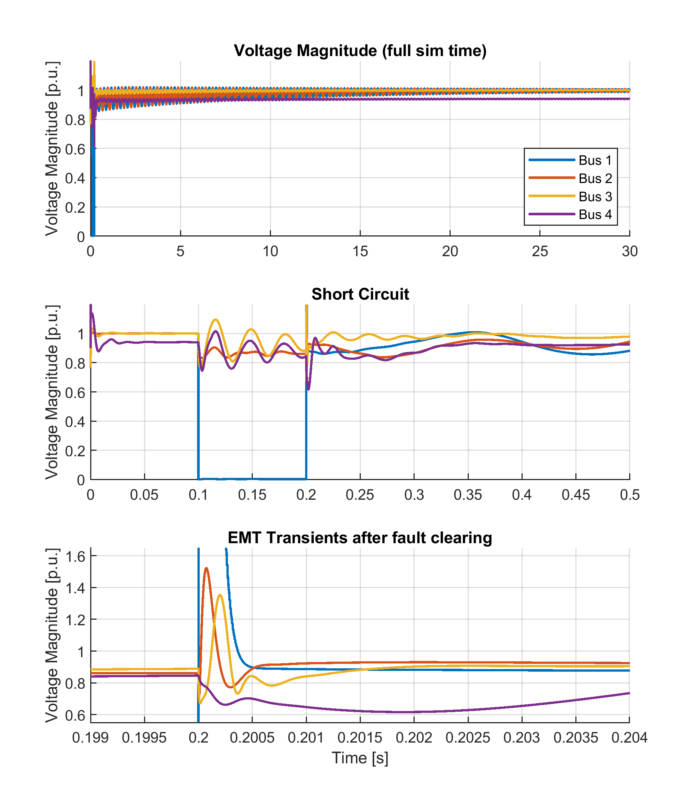
The initial state calculated by SimplusGT is slightly off, that's why we see some small oscillations in the MATLAB reference in the first 0.05 seconds. Besides that, we nicely replicate the results from SimplusGT, even for EMT transients.
Identification of Critical Eigenmodes
In the time-domain simulation we see some relatively high oscillations of both inverter-based resources during the fault. Let's try to damp them! First, we need to identify the critical eigenmode here. For that we take the power spectrum of the magnitude of both affected buses and look for dominant frequencies.
We use basic NetworkDynamics functionality to sample :busbar₊u_mag for bus 3 and 4 in the first second. Then we perform a basic FFT on those to obtain the power spectrum:
using FFTA
using Statistics
dt = 0.001
ts = 0:dt:1.0
umags = [sol(ts, idxs=VIndex(Symbol(:bus, i), :busbar₊u_mag)).u for i in 3:4]
fs = 1/dt # sampling frequency [Hz]
N = length(ts)
umag_no_dc = [(umag .- mean(umag)) for umag in umags]
fft_results = fft.(umag_no_dc)
power_ffts = [abs.(fft_result).^2 / N for fft_result in fft_results]
powers = [power_fft[1:N÷2] for power_fft in power_ffts]
freqs_hz = (0:N÷2-1) .* (fs/N)The power spectrum is plotted together with the eigenvalues to visually identify the critical mode.
Plotting code: Power Spectrum
fig = let
fig = Figure(size=(600,400))
ax1 = Axis(fig[1, 1], xlabel="Real Part [Hz]", ylabel="Imaginary Part [Hz]",
title="Pole Map with Power Spectrum Overlay")
# ylims!(ax1, -freqs_hz[end], freqs_hz[end])
xlims!(ax1, -10, 0.1); ylims!(ax1, -60, 60)
critical_mode = argmin(ev -> abs(imag(ev)-31), eigenvalues)
scatter!(ax1, real(critical_mode), imag(critical_mode),color=:red, markersize=50, alpha=0.3)
factor = 20
lines!(ax1, -factor*powers[1], freqs_hz, label="Power Spectrum GFM (scaled)", color=Cycled(3))
lines!(ax1, -factor*powers[2], freqs_hz, label="Power Spectrum GFL (scaled)", color=Cycled(4))
scatter!(ax1, real.(eigenvalues), imag.(eigenvalues), marker=:xcross, label="Eigenvalues")
axislegend(ax1; position=:rb)
fig
end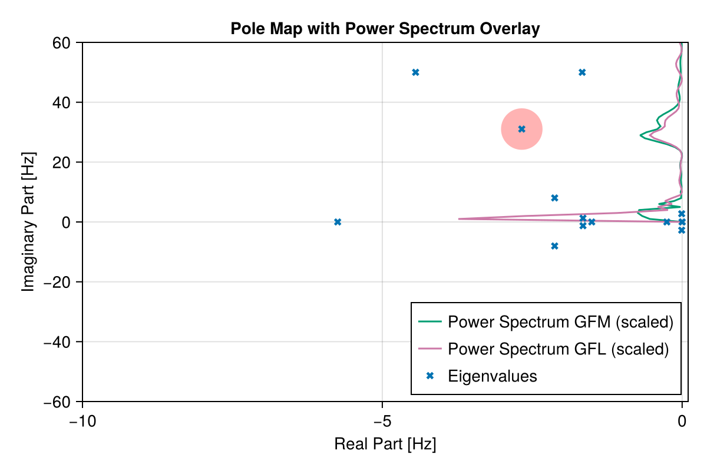
The spectrum shows that the main oscillations occur at very low frequencies. However, we are interested in the bump around 31 Hz, which corresponds to the oscillations between 0.1 and 0.2 seconds in the time-domain plot.
Let's find out which mode index corresponds to that 31 Hz mode:
critical_mode_i = findmin(ev -> abs(imag(ev)-31), eigenvalues)[2]34With the critical mode identified, we can look at the participation factors to see which states are most involved in that mode. For that we use show_participation_factors from NetworkDynamics:
show_participation_factors(s0, modes=critical_mode_i, threshold=0.1)Participation Factors:
Mode Real (Hz) Imag (Hz) Factor State
─────────────────────────────────────────────────────────────────
34 -2.674 31.04 0.185 VIndex(5, :droop₊vsrc₊vc₊γ_q)
0.1811 VIndex(5, :droop₊vsrc₊vc₊γ_d)
0.1094 EIndex(4, :branch₊i_line_r)
0.1094 EIndex(6, :branch₊i_line_r)
0.1084 EIndex(6, :branch₊i_line_i)
0.1084 EIndex(4, :branch₊i_line_i)We see that the main participation comes from the states droop₊vsrc₊vc₊γ_q and droop₊vsrc₊vc₊γ_d of our droop inverter. If we inspect the model definition, we see that those are related to the d and q components of the internal integrator state of the PI voltage controller.
Next we perform a parameter sensitivity analysis to see how to increase the damping of those modes.
Parameter Sensitivity Analysis
Having identified the modes of interest, the natural next question is: which parameters most influence a given mode?
The eigenvalue_sensitivity function computes the sensitivity of a specific eigenvalue to every parameter in the system using the classical formula:
\[\frac{\partial \lambda_i}{\partial p_k} = \mathbf{w}_i^\top \frac{\partial A_s}{\partial p_k} \mathbf{v}_i\]
where $\mathbf{v}_i$ and $\mathbf{w}_i$ are the right and left eigenvectors. The Jacobian derivative $\partial A_s / \partial p_k$ is computed exactly via nested forward-mode automatic differentiation.
The results are displayed as scaled sensitivities $p_k \cdot \partial\lambda/\partial p_k$, which give the eigenvalue shift per 100% parameter change — making it easy to compare parameters of vastly different magnitudes.
We already know that the critical mode belongs to the droop inverter. Therefore, we'll focus our analysis on the droop inverter parameters. eigenvalue_sensitivity allows us to pass a list of parameters for which we want to obtain the sensitivities. We use vpidxs to generate a list of all the parameter symbols of our droop inverter.
psyms = vpidxs(nw, :gfm_bus)25-element Vector{NetworkDynamics.SymbolicIndex}:
VIndex(5, :droop₊droop₊Kp)
VIndex(5, :droop₊droop₊ω0)
VIndex(5, :droop₊droop₊Kq)
VIndex(5, :droop₊droop₊τ_q)
VIndex(5, :droop₊droop₊Vset)
VIndex(5, :droop₊droop₊τ_p)
VIndex(5, :droop₊droop₊Qset)
VIndex(5, :droop₊droop₊Pset)
VIndex(5, :droop₊vsrc₊CC1_F)
VIndex(5, :droop₊vsrc₊CC1_KI)
⋮
VIndex(5, :droop₊vsrc₊Lg)
VIndex(5, :droop₊vsrc₊VC_KP)
VIndex(5, :droop₊vsrc₊VC_F)
VIndex(5, :droop₊vsrc₊ω0)
VIndex(5, :droop₊vsrc₊Rg)
VIndex(5, :droop₊vsrc₊R_virt)
VIndex(5, :droop₊vsrc₊VC_Fcoupl)
VIndex(5, :droop₊vsrc₊VC_KI)
VIndex(5, :droop₊vsrc₊filter₊connected)We can use show_eigenvalue_sensitivity to get a nice table of the most sensitive parameters for our critical mode. We sort by real magnitude, since we are mostly interested in improving the damping of the mode.
show_eigenvalue_sensitivity(s0, critical_mode_i; params=psyms, threshold=0.01, sortby=:realmag)Eigenvalue Sensitivity for mode 34: λ = -2.674 ± 31.04j Hz
Parameter Value Real (Hz) Imag (Hz) |p·∂λ/∂p| (Hz) ∠ (deg)
────────────────────────────────────────────────────────────────────────────────────────────────
VIndex(5, :droop₊vsrc₊Rg) 0.002 -0.3668 0.01983 0.3674 176.9
VIndex(5, :droop₊vsrc₊filter₊connected) 1 -0.2162 23.42 23.42 90.53
VIndex(5, :droop₊vsrc₊VC_KI) 2827 -0.2099 13.36 13.36 90.9
VIndex(5, :droop₊vsrc₊Lg) 0.01 0.1359 0.6909 0.7041 78.87
VIndex(5, :droop₊vsrc₊VC_KP) 0.12 -0.1104 -0.01123 0.1109 -174.2
VIndex(5, :droop₊droop₊τ_p) 0.03183 -0.1067 1.178 1.183 95.18
VIndex(5, :droop₊vsrc₊X_virt) 0.01 0.1033 1.872 1.875 86.84
VIndex(5, :droop₊droop₊Kp) 15.71 -0.0831 -1.179 1.182 -94.03
VIndex(5, :droop₊vsrc₊CC1_KP) 0.6 -0.07488 0.004439 0.07501 176.6
VIndex(5, :droop₊vsrc₊CC1_KI) 565.5 0.05721 0.3869 0.3911 81.59
VIndex(5, :droop₊vsrc₊Rf) 0.01 0.04461 -0.004583 0.04484 -5.866
VIndex(5, :droop₊vsrc₊ω0) 314.2 -0.04091 1.015 1.016 92.31
VIndex(5, :droop₊vsrc₊Lf) 0.05 -0.02063 -0.08342 0.08593 -103.9The most impactful parameters are:
- The grid-side filter resistance
Rgand inductanceLg(can't be "tuned" since they are physical parameters) - The topology parameter
connectedwhich is not tunable - The proportional and integral gains of the voltage controller
VC_KPandVC_KI
Let's check our eigenvalues after initializing the system again with those parameters increased by a factor of 3:
default_overrides = Dict(
VIndex(5, :droop₊vsrc₊VC_KP) => 3.0*s0.v[:gfm_bus, :droop₊vsrc₊VC_KP],
VIndex(5, :droop₊vsrc₊VC_KI) => 3.0*s0.v[:gfm_bus, :droop₊vsrc₊VC_KI]
)
s0_tuned = initialize_from_pf(nw; pfs, default_overrides, tol=1e-7, nwtol=1e-7)Initialize VIndex(1) -> 6.114655223365241e-15
Initialize VIndex(2) -> 4.2315738567606557e-10
Initialize VIndex(3) -> 2.2640520640733482e-14
Initialize VIndex(4) -> 5.120412652869021e-10
Initialize VIndex(5) -> 8.944416269384488e-13
Initialize VIndex(6) -> 1.17030094251339e-8
Initialize VIndex(7) -> 1.649300367088534e-12
Initialize VIndex(8) -> 1.41779809440649e-8
Initialize EIndex(1) -> 0.0
Initialize EIndex(2) -> 1.5757357078607168e-16
Initialize EIndex(3) -> 0.0
Initialize EIndex(4) -> 6.240178189820104e-15
Initialize EIndex(5) -> 0.0
Initialize EIndex(6) -> 7.198844511193468e-15
Initialize EIndex(7) -> 4.019578521369299e-14
Initialize EIndex(8) -> 0.0
Initialized network with residual 4.6211848419994314e-8!We can plot the new eigenvalues together with the old ones to see the effect of our tuning:
Plotting code: Pole Map (Tuned)
fig = let
fig = Figure(size=(600,400))
ax1 = Axis(fig[1, 1], xlabel="Real Part [Hz]", ylabel="Imaginary Part [Hz]",
title="Pole Map before and after Tuning")
# ylims!(ax1, -freqs_hz[end], freqs_hz[end])
xlims!(ax1, -10, 0.1); ylims!(ax1, -60, 60)
old_ev = jacobian_eigenvals(s0) ./ (2 * pi)
new_ev = jacobian_eigenvals(s0_tuned) ./ (2 * pi)
scatter!(ax1, real.(old_ev), imag.(old_ev), markersize=5, label="Eigenvalues (pre tuning)", color=Cycled(2))
scatter!(ax1, real.(new_ev), imag.(new_ev), marker=:xcross, label="Eigenvalues (post tuning)")
# add arrow plot to show movement of critical modes
path = (t) -> old_ev[critical_mode_i] + t * (new_ev[critical_mode_i] - old_ev[critical_mode_i])
arrows2d!(ax1, [(real(path(0.2)), imag(path(0.2)))], [(real(path(0.8)), imag(path(0.8)))]; argmode=:endpoint, shaftwidth=1, tiplength=5, tipwidth=5)
arrows2d!(ax1, [(real(path(0.2)), -imag(path(0.2)))], [(real(path(0.8)), -imag(path(0.8)))]; argmode=:endpoint, shaftwidth=1, tiplength=5, tipwidth=5)
axislegend(ax1; position=:lb)
fig
end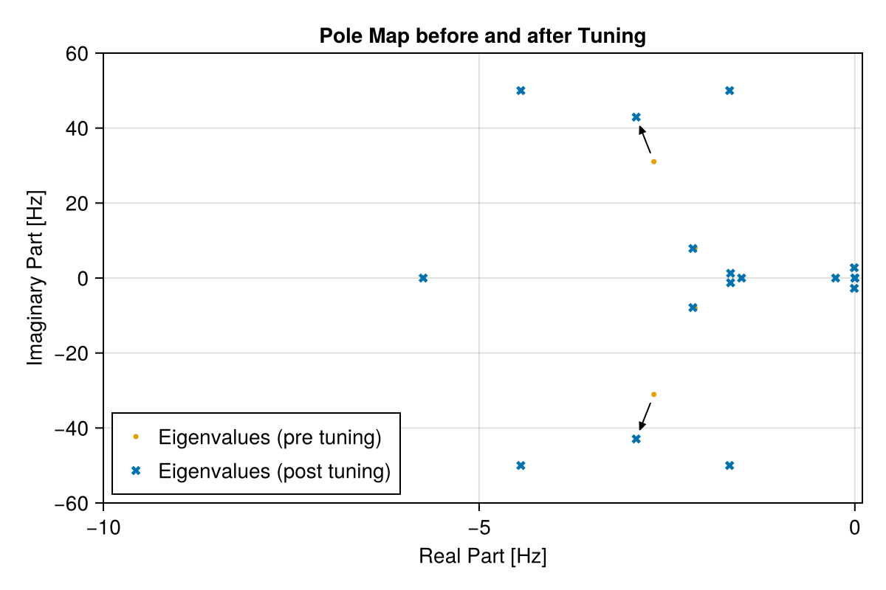
Lastly, we run the time-domain simulation again with the tuned parameters to see the effect on the system response.
prob_tuned = ODEProblem(nw, s0_tuned, (0,30); add_comp_cb=VIndex(:bus1)=>short)
sol_tuned = solve(prob_tuned, Rodas5P())Short Circuit at Bus 1 at t=0.1s
Clearing Short Circuit at Bus 1 at t=0.2sWhen we plot the tuned and untuned solutions together we can verify that the oscillations have been damped by the tuning.
Plotting code: Short Circuit Response (Tuned)
fig = with_theme(Theme(palette = (; color = Makie.wong_colors()[[1, 6, 2, 4]]))) do
fig = Figure()
ax = Axis(fig[1,1], title="Voltage Magnitude (tuned)", limits=((0,0.5), (0.0, 1.2)))
ts = filter(t -> t>0, refine_timeseries(sol.t))
for i in 1:4
lines!(ax, ts, sol_tuned(ts, idxs=VIndex(Symbol(:bus, i), :busbar₊u_mag)).u; label="Bus $i", color=Cycled(i))
end
ax2 = Axis(fig[2,1], title="Voltage Magnitude (before)", limits=((0,0.5), (0.0, 1.2)))
for i in 1:4
lines!(ax2, ts, sol(ts, idxs=VIndex(Symbol(:bus, i), :busbar₊u_mag)).u; label="Bus $i", color=Cycled(i))
end
axislegend(ax2; position=:rb)
fig
end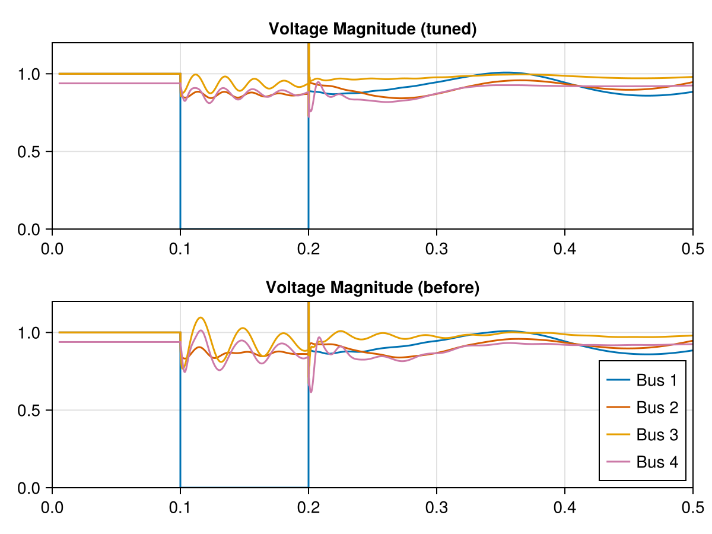
This page was generated using Literate.jl.
Settings
This document was generated with Documenter.jl version 1.17.0 on Monday 20 April 2026. Using Julia version 1.11.9.